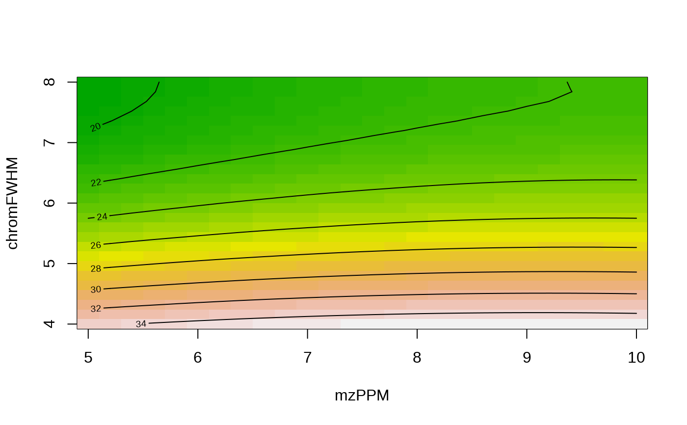

R/main.R, R/feature_groups-optimize.R, R/features-optimize.R
feature-optimization.RdAutomatic optimization of feature finding and grouping parameters through Design of Experiments (DoE).
optimizeFeatureGrouping(features, algorithm, ..., templateParams = list(), paramRanges = list(), maxIterations = 50, maxModelDeviation = 0.1) generateFGroupsOptPSet(algorithm, ...) getDefFGroupsOptParamRanges(algorithm) optimizeFeatureFinding(anaInfo, algorithm, ..., templateParams = list(), paramRanges = list(), isoIdent = if (algorithm == "openms") "OpenMS" else "IPO", checkPeakShape = "none", CAMERAOpts = list(), maxIterations = 50, maxModelDeviation = 0.1) generateFeatureOptPSet(algorithm, ...) getDefFeaturesOptParamRanges(algorithm, method = "centWave")
| features | A |
|---|---|
| algorithm | Which algorithm should be used for feature finding/grouping
(passed to |
| ... | One or more lists with parameter sets (see below) (for
|
| templateParams | Template parameter set (see below). |
| paramRanges | A list with vectors containing absolute parameter ranges
(minimum/maximum) that constrain numeric parameters choosen during
experiments. See the |
| maxIterations | Maximum number of iterations that may be performed to find optimimum values. Used to restrict neededless long optimization procedures. In IPO this was fixed to 50. |
| maxModelDeviation | See the |
| anaInfo | Analysis info table (passed
to |
| isoIdent | Sets the algorithm used to identify isotopes. Valid values
are: |
| checkPeakShape | Additional peak shape checking of isotopes. Only used
if |
| CAMERAOpts | A |
| method | Method used by XCMS to find features (only if |
The optimizeFeatureFinding and optimizeFeatureGrouping
return their results in a optimizationResult object.
Many different parameters exist that may affect the output quality of feature finding and grouping. To avoid time consuming manual experimentation, functionality is provided to largely automate the optimization process. The methodology, which uses design of experiments (DoE), is based on the excellent Isotopologue Parameter Optimization (IPO) R package. The functionality of this package is directly integrated in patRoon. Some functionality was added or changed, however, the principle algorithm workings are nearly identical.
Compared to IPO, the following functionality was added or changed:
The code was made more generic in order to include support for other feature finding/grouping algorithms (e.g. OpenMS, enviPick, XCMS3).
The methodology of FeatureFinderMetabo (OpenMS) may be used
to find isotopes.
The
maxModelDeviation parameter was added to potentially avoid
suboptimal results (issue
discussed here).
The use of multiple 'parameter sets' (discussed
below) which, for instance, allow optimizing qualitative paremeters more
easily (see examples).
More consistent optimization code for feature finding/grouping.
More consistent output using S4 classes (i.e.
optimizationResult class).
Experiments are not (yet) executed in parallel (although feature finding or grouping may be if the algorithm supports it).
Which parameters should be optimized is determined
by a parameter set. A set is defined by a named list
containing the minimum and maximum starting range for each parameter that
should be tested. For instance, the set list(chromFWHM = c(5, 10),
mzPPM = c(5, 15)) specifies that the chromFWHM and mzPPM
parameters (used by OpenMS feature finding) should be optimized within a
range of 5-10 and 5-15, respectively. Note that
this range may be increased or decreased after a DoE iteration in order to
find a better optimum. The absolute limits are controlled by the
paramRanges function argument.
Multiple parameter sets may be specified (i.e. through the ...
function argument). In this situation, the optimization algorithm is
repeated for each set, and the final optimum is determined from the parameter
set with the best response. The templateParams function argument may
be useful in this case to define a template for each parameter set. Actual
parameter sets are then constructed by joining each parameter set with the
set specified for templateParams. When a parameter is defined in
both a regular and template set, the parameter in the regular set takes
precedence.
Parameters that should not be optimized but still need to be set for the
feature finding/grouping functions should also be defined in a (template)
parameter set. Which parameters should be optimized is determined whether
its value is specified as a vector range or a single fixed value.
For instance, when a set is defined as list(chromFWHM = c(5, 10),
mzPPM = 5), only the chromFWHM parameter is optimized, whereas
mzPPM is kept constant at 5.
Using multiple parameter sets with differing fixed values allows optimization of qualitative values (see examples below).
The parameters specified in parameter sets are directly passed through
the findFeatures or groupFeatures functions.
Hence, grouping and retention time alignment parameters used by XCMS should
(still) be set through the groupArgs and retcorArgs
parameters.
NOTE: For XCMS3, which normally uses parameter classes for
settings its options, the parameters must be defined in a named list like
any other algorithm. The set parameters are then used to automatically
constructor of the right parameter class object (e.g.
CentWaveParam, ObiwarpParam). For
grouping/alignment sets, these parameters need to be specified in nested
lists called groupParams and retAlignParams, respectively
(similar to groupArgs/retcorArgs for
algorithm="xcms"). Finally, the underlying XCMS method to be used
should be defined in the parameter set (i.e. by setting the
method field for feature parameter sets and the groupMethod
and retAlignMethod for grouping/aligning parameter sets). See the
examples below for more details.
NOTE: Similar to IPO, the peakwidth and prefilter
parameters for XCMS feature finding should be split in two different
values:
The minimum and maximum ranges for peakwidth are optimized by
setting min_peakwidth and max_peakwidth, respectively.
The k and I parameters contained in prefilter
are split in prefilter and value_of_prefilter,
respectively.
The optimizeFeatureFinding and
optimizeFeatureGrouping are the functions to be used to optimize
parameters for feature finding and grouping, respectively. These functions
are analogous to optimizeXcmsSet and
optimizeRetGroup from IPO.
The generateFeatureOptPSet and generateFGroupsOptPSet functions
may be used to generate a parameter set for feature finding and grouping,
respectively. Some algorithm dependent default parameter optimization ranges
will be returned. These functions are analogous to
getDefaultXcmsSetStartingParams and
getDefaultRetGroupStartingParams from IPO. However,
unlike their IPO counterparts, these functions will not output default fixed
values. The generateFGroupsOptPSet will only generate defaults for
density grouping if algorithm="xcms".
The getDefFeaturesOptParamRanges and
getDefFGroupsOptParamRanges return the default absolute optimization
parameter ranges for feature finding and grouping, respectively. These
functions are useful if you want to set the paramRanges function
argument.
After each
experiment iteration an optimimum parameter set is found by generating a
model containing the tested parameters and their responses. Sometimes the
actual response from the parameters derived from the model is actually
signficantly lower than expected. When the response is lower than the
maximum reponse found during the experiment, the parameters belonging to
this experimental maximum may be choosen instead. The
maxModelDeviation argument sets the maximum deviation in response
between the modelled and experimental maxima. The value is relative:
0 means that experimental values will always be favored when leading
to improved responses, whereas 1 will effectively disable this
procedure (and return to 'regular' IPO behaviour).
The code and methodology is a direct adaptation from the IPO R package.
Libiseller G, Dvorzak M, Kleb U, Gander E, Eisenberg T, Madeo F, Neumann S, Trausinger G, Sinner F, Pieber T, Magnes C (2015). “IPO: a tool for automated optimization of XCMS parameters.” BMC Bioinformatics, 16(1). doi: 10.1186/s12859-015-0562-8 , https://doi.org/10.1186/s12859-015-0562-8.
# example data from patRoonData package dataDir <- patRoonData::exampleDataPath() anaInfo <- generateAnalysisInfo(dataDir) anaInfo <- anaInfo[1:2, ] # only focus on first two analyses (e.g. training set) # optimize mzPPM and chromFWHM parameters ftOpt <- optimizeFeatureFinding(anaInfo, "openms", list(mzPPM = c(5, 10), chromFWHM = c(4, 8)))#> Starting new DoE (iteration 1): #> mzPPM: c(5, 10) #> chromFWHM: c(4, 8) #> --- #> Design: #> run.order std.order mzPPM chromFWHM Block #> 1 1 1 5.0 4 1 #> 2 2 2 10.0 4 1 #> 3 3 3 5.0 8 1 #> 4 4 4 10.0 8 1 #> 5 5 5 7.5 6 1 #> 6 1 1 5.0 6 2 #> 7 2 2 10.0 6 2 #> 8 3 3 7.5 4 2 #> 9 4 4 7.5 8 2 #> 10 5 5 7.5 6 2 #> --- #> | | | 0% | |======= | 10% | |============== | 20% | |===================== | 30% | |============================ | 40% | |=================================== | 50% | |========================================== | 60% | |================================================= | 70% | |======================================================== | 80% | |=============================================================== | 90% | |======================================================================| 100% #> #> --- #> Response: #> featureCount nonRP RP PPS experiment score #> 1: 759 134 67 33.50000 1 33.50000 #> 2: 769 133 68 34.76692 2 34.76692 #> 3: 644 135 51 19.26667 3 19.26667 #> 4: 658 134 54 21.76119 4 21.76119 #> 5: 732 149 60 24.16107 5 24.16107 #> 6: 727 149 59 23.36242 6 23.36242 #> 7: 741 144 61 25.84028 7 25.84028 #> 8: 765 126 67 35.62698 8 35.62698 #> 9: 649 134 54 21.76119 9 21.76119 #> 10: 732 149 60 24.16107 10 24.16107 #> --- #> Best params: mzPPM: 9; chromFWHM: 4; logPath: NULL; #> Best results: featureCount: 770; nonRP: 130; RP: 67; PPS: 34.5307692307692; #> --- #> Starting new DoE (iteration 2): #> mzPPM: c(6.5, 11.5) #> chromFWHM: c(2, 6) #> --- #> Design: #> run.order std.order mzPPM chromFWHM Block #> 1 1 1 6.5 2 1 #> 2 2 2 11.5 2 1 #> 3 3 3 6.5 6 1 #> 4 4 4 11.5 6 1 #> 5 5 5 9.0 4 1 #> 6 1 1 6.5 4 2 #> 7 2 2 11.5 4 2 #> 8 3 3 9.0 2 2 #> 9 4 4 9.0 6 2 #> 10 5 5 9.0 4 2 #> --- #> | | | 0% | |======= | 10% | |============== | 20% | |===================== | 30% | |============================ | 40% | |=================================== | 50% | |========================================== | 60% | |================================================= | 70% | |======================================================== | 80% | |=============================================================== | 90% | |======================================================================| 100% #> #> --- #> Response: #> featureCount nonRP RP PPS experiment score #> 1: 679 97 52 27.87629 1 27.87629 #> 2: 684 97 52 27.87629 2 27.87629 #> 3: 730 148 60 24.32432 3 24.32432 #> 4: 746 144 61 25.84028 4 25.84028 #> 5: 770 130 67 34.53077 5 34.53077 #> 6: 763 129 67 34.79845 6 34.79845 #> 7: 770 132 68 35.03030 7 35.03030 #> 8: 682 97 52 27.87629 8 27.87629 #> 9: 738 148 60 24.32432 9 24.32432 #> 10: 770 130 67 34.53077 10 34.53077 #> --- #> Best params: mzPPM: 11.5; chromFWHM: 3.8; logPath: NULL; #> Best results: featureCount: 767; nonRP: 132; RP: 68; PPS: 35.030303030303; #> --- #> Starting new DoE (iteration 3): #> mzPPM: c(9, 14) #> chromFWHM: c(2.2, 5.4) #> --- #> Design: #> run.order std.order mzPPM chromFWHM Block #> 1 1 1 9.0 2.2 1 #> 2 2 2 14.0 2.2 1 #> 3 3 3 9.0 5.4 1 #> 4 4 4 14.0 5.4 1 #> 5 5 5 11.5 3.8 1 #> 6 1 1 9.0 3.8 2 #> 7 2 2 14.0 3.8 2 #> 8 3 3 11.5 2.2 2 #> 9 4 4 11.5 5.4 2 #> 10 5 5 11.5 3.8 2 #> --- #> | | | 0% | |======= | 10% | |============== | 20% | |===================== | 30% | |============================ | 40% | |=================================== | 50% | |========================================== | 60% | |================================================= | 70% | |======================================================== | 80% | |=============================================================== | 90% | |======================================================================| 100% #> #> --- #> Response: #> featureCount nonRP RP PPS experiment score #> 1: 686 98 52 27.59184 1 27.59184 #> 2: 686 90 53 31.21111 2 31.21111 #> 3: 748 146 61 25.48630 3 25.48630 #> 4: 757 143 64 28.64336 4 28.64336 #> 5: 767 132 68 35.03030 5 35.03030 #> 6: 766 134 68 34.50746 6 34.50746 #> 7: 767 128 70 38.28125 7 38.28125 #> 8: 686 91 52 29.71429 8 29.71429 #> 9: 754 143 63 27.75524 9 27.75524 #> 10: 767 132 68 35.03030 10 35.03030 #> --- #> Best params: mzPPM: 14; chromFWHM: 3.64; logPath: NULL; #> Best results: featureCount: 761; nonRP: 116; RP: 70; PPS: 42.2413793103448; #> --- #> Starting new DoE (iteration 4): #> mzPPM: c(11.5, 16.5) #> chromFWHM: c(2.36, 4.92) #> --- #> Design: #> run.order std.order mzPPM chromFWHM Block #> 1 1 1 11.5 2.36 1 #> 2 2 2 16.5 2.36 1 #> 3 3 3 11.5 4.92 1 #> 4 4 4 16.5 4.92 1 #> 5 5 5 14.0 3.64 1 #> 6 1 1 11.5 3.64 2 #> 7 2 2 16.5 3.64 2 #> 8 3 3 14.0 2.36 2 #> 9 4 4 14.0 4.92 2 #> 10 5 5 14.0 3.64 2 #> --- #> | | | 0% | |======= | 10% | |============== | 20% | |===================== | 30% | |============================ | 40% | |=================================== | 50% | |========================================== | 60% | |================================================= | 70% | |======================================================== | 80% | |=============================================================== | 90% | |======================================================================| 100% #> #> --- #> Response: #> featureCount nonRP RP PPS experiment score #> 1: 685 89 52 30.38202 1 30.38202 #> 2: 686 88 53 31.92045 2 31.92045 #> 3: 771 128 68 36.12500 3 36.12500 #> 4: 773 131 70 37.40458 4 37.40458 #> 5: 761 116 70 42.24138 5 42.24138 #> 6: 762 120 68 38.53333 6 38.53333 #> 7: 762 115 71 43.83478 7 43.83478 #> 8: 685 88 53 31.92045 8 31.92045 #> 9: 772 125 70 39.20000 9 39.20000 #> 10: 761 116 70 42.24138 10 42.24138 #> --- #> Best params: mzPPM: 15.25; chromFWHM: 3.896; logPath: NULL; #> Best results: featureCount: 771; nonRP: 123; RP: 71; PPS: 40.9837398373984; #> --- #> === #> DONE! #> Best parameter set: 1 #> Best DoE iteration: 4# optimize chromFWHM and isotopeFilteringModel (a qualitative parameter) ftOpt2 <- optimizeFeatureFinding(anaInfo, "openms", list(isotopeFilteringModel = "metabolites (5% RMS)"), list(isotopeFilteringModel = "metabolites (2% RMS)"), templateParams = list(chromFWHM = c(4, 8)))#> Starting new DoE (parameter set 1/2, iteration 1): #> chromFWHM: c(4, 8) #> isotopeFilteringModel: metabolites (5% RMS) #> --- #> Design: #> run.order chromFWHM #> 1 1 -1.00 #> 2 2 -0.75 #> 3 3 -0.50 #> 4 4 -0.25 #> 5 5 0.00 #> 6 6 0.25 #> 7 7 0.50 #> 8 8 0.75 #> 9 9 1.00 #> --- #> | | | 0% | |======== | 11% | |================ | 22% | |======================= | 33% | |=============================== | 44% | |======================================= | 56% | |=============================================== | 67% | |====================================================== | 78% | |============================================================== | 89% | |======================================================================| 100% #> #> --- #> Response: #> featureCount nonRP RP PPS experiment score #> 1: 769 133 68 34.76692 1 34.76692 #> 2: 769 135 68 34.25185 2 34.25185 #> 3: 757 148 62 25.97297 3 25.97297 #> 4: 748 145 62 26.51034 4 26.51034 #> 5: 741 144 61 25.84028 5 25.84028 #> 6: 730 139 61 26.76978 6 26.76978 #> 7: 666 128 54 22.78125 7 22.78125 #> 8: 664 138 55 21.92029 8 21.92029 #> 9: 658 134 54 21.76119 9 21.76119 #> --- #> Best params: chromFWHM: 4; isotopeFilteringModel: metabolites (5% RMS); logPath: NULL; #> Best results: featureCount: 769; nonRP: 133; RP: 68; PPS: 34.7669172932331; #> --- #> Starting new DoE (parameter set 1/2, iteration 2): #> chromFWHM: c(2, 6) #> isotopeFilteringModel: metabolites (5% RMS) #> --- #> Design: #> run.order chromFWHM #> 1 1 -1.00 #> 2 2 -0.75 #> 3 3 -0.50 #> 4 4 -0.25 #> 5 5 0.00 #> 6 6 0.25 #> 7 7 0.50 #> 8 8 0.75 #> 9 9 1.00 #> --- #> | | | 0% | |======== | 11% | |================ | 22% | |======================= | 33% | |=============================== | 44% | |======================================= | 56% | |=============================================== | 67% | |====================================================== | 78% | |============================================================== | 89% | |======================================================================| 100% #> Modelled parameter optimum yields significantly lower experimental score: 27.9/34.5 #> Taking data from best experimental value (38.1) instead... #> #> --- #> Response: #> featureCount nonRP RP PPS experiment score #> 1: 682 97 52 27.87629 1 27.87629 #> 2: 685 88 52 30.72727 2 30.72727 #> 3: 744 101 62 38.05941 3 38.05941 #> 4: 755 124 68 37.29032 4 37.29032 #> 5: 769 133 68 34.76692 5 34.76692 #> 6: 769 135 68 34.25185 6 34.25185 #> 7: 757 148 62 25.97297 7 25.97297 #> 8: 748 145 62 26.51034 8 26.51034 #> 9: 741 144 61 25.84028 9 25.84028 #> --- #> Best params: chromFWHM: 3; isotopeFilteringModel: metabolites (5% RMS); logPath: NULL; #> Best results: featureCount: 744; nonRP: 101; RP: 62; PPS: 38.0594059405941; #> --- #> Starting new DoE (parameter set 1/2, iteration 3): #> chromFWHM: c(1, 5) #> isotopeFilteringModel: metabolites (5% RMS) #> --- #> Design: #> run.order chromFWHM #> 1 1 -1.00 #> 2 2 -0.75 #> 3 3 -0.50 #> 4 4 -0.25 #> 5 5 0.00 #> 6 6 0.25 #> 7 7 0.50 #> 8 8 0.75 #> 9 9 1.00 #> --- #> | | | 0% | |======== | 11% | |================ | 22% | |======================= | 33% | |=============================== | 44% | |======================================= | 56% | |=============================================== | 67% | |====================================================== | 78% | |============================================================== | 89% | |======================================================================| 100% #> Modelled parameter optimum yields significantly lower experimental score: 26.0/33.7 #> Taking data from best experimental value (38.1) instead... #> #> --- #> Response: #> featureCount nonRP RP PPS experiment score #> 1: 713 100 52 27.04000 1 27.04000 #> 2: 684 90 52 30.04444 2 30.04444 #> 3: 682 97 52 27.87629 3 27.87629 #> 4: 685 88 52 30.72727 4 30.72727 #> 5: 744 101 62 38.05941 5 38.05941 #> 6: 755 124 68 37.29032 6 37.29032 #> 7: 769 133 68 34.76692 7 34.76692 #> 8: 769 135 68 34.25185 8 34.25185 #> 9: 757 148 62 25.97297 9 25.97297 #> --- #> Best params: chromFWHM: 3; isotopeFilteringModel: metabolites (5% RMS); logPath: NULL; #> Best results: featureCount: 744; nonRP: 101; RP: 62; PPS: 38.0594059405941; #> --- #> Starting new DoE (parameter set 2/2, iteration 1): #> chromFWHM: c(4, 8) #> isotopeFilteringModel: metabolites (2% RMS) #> --- #> Design: #> run.order chromFWHM #> 1 1 -1.00 #> 2 2 -0.75 #> 3 3 -0.50 #> 4 4 -0.25 #> 5 5 0.00 #> 6 6 0.25 #> 7 7 0.50 #> 8 8 0.75 #> 9 9 1.00 #> --- #> | | | 0% | |======== | 11% | |================ | 22% | |======================= | 33% | |=============================== | 44% | |======================================= | 56% | |=============================================== | 67% | |====================================================== | 78% | |============================================================== | 89% | |======================================================================| 100% #> #> --- #> Response: #> featureCount nonRP RP PPS experiment score #> 1: 769 133 68 34.76692 1 34.76692 #> 2: 769 135 68 34.25185 2 34.25185 #> 3: 757 148 62 25.97297 3 25.97297 #> 4: 748 145 62 26.51034 4 26.51034 #> 5: 741 144 61 25.84028 5 25.84028 #> 6: 730 139 61 26.76978 6 26.76978 #> 7: 667 129 53 21.77519 7 21.77519 #> 8: 665 139 54 20.97842 8 20.97842 #> 9: 659 135 53 20.80741 9 20.80741 #> --- #> Best params: chromFWHM: 4; isotopeFilteringModel: metabolites (2% RMS); logPath: NULL; #> Best results: featureCount: 769; nonRP: 133; RP: 68; PPS: 34.7669172932331; #> --- #> Starting new DoE (parameter set 2/2, iteration 2): #> chromFWHM: c(2, 6) #> isotopeFilteringModel: metabolites (2% RMS) #> --- #> Design: #> run.order chromFWHM #> 1 1 -1.00 #> 2 2 -0.75 #> 3 3 -0.50 #> 4 4 -0.25 #> 5 5 0.00 #> 6 6 0.25 #> 7 7 0.50 #> 8 8 0.75 #> 9 9 1.00 #> --- #> | | | 0% | |======== | 11% | |================ | 22% | |======================= | 33% | |=============================== | 44% | |======================================= | 56% | |=============================================== | 67% | |====================================================== | 78% | |============================================================== | 89% | |======================================================================| 100% #> Modelled parameter optimum yields significantly lower experimental score: 26.5/33.1 #> Taking data from best experimental value (37.3) instead... #> #> --- #> Response: #> featureCount nonRP RP PPS experiment score #> 1: 683 98 51 26.54082 1 26.54082 #> 2: 686 89 51 29.22472 2 29.22472 #> 3: 745 102 61 36.48039 3 36.48039 #> 4: 755 124 68 37.29032 4 37.29032 #> 5: 769 133 68 34.76692 5 34.76692 #> 6: 769 135 68 34.25185 6 34.25185 #> 7: 757 148 62 25.97297 7 25.97297 #> 8: 748 145 62 26.51034 8 26.51034 #> 9: 741 144 61 25.84028 9 25.84028 #> --- #> Best params: chromFWHM: 3.5; isotopeFilteringModel: metabolites (2% RMS); logPath: NULL; #> Best results: featureCount: 755; nonRP: 124; RP: 68; PPS: 37.2903225806452; #> --- #> Starting new DoE (parameter set 2/2, iteration 3): #> chromFWHM: c(1.5, 5.5) #> isotopeFilteringModel: metabolites (2% RMS) #> --- #> Design: #> run.order chromFWHM #> 1 1 -1.00 #> 2 2 -0.75 #> 3 3 -0.50 #> 4 4 -0.25 #> 5 5 0.00 #> 6 6 0.25 #> 7 7 0.50 #> 8 8 0.75 #> 9 9 1.00 #> --- #> | | | 0% | |======== | 11% | |================ | 22% | |======================= | 33% | |=============================== | 44% | |======================================= | 56% | |=============================================== | 67% | |====================================================== | 78% | |============================================================== | 89% | |======================================================================| 100% #> Modelled parameter optimum yields significantly lower experimental score: 28.6/31.2 #> Taking data from best experimental value (37.3) instead... #> #> --- #> Response: #> featureCount nonRP RP PPS experiment score #> 1: 685 91 51 28.58242 1 28.58242 #> 2: 683 98 51 26.54082 2 26.54082 #> 3: 686 89 51 29.22472 3 29.22472 #> 4: 745 102 61 36.48039 4 36.48039 #> 5: 755 124 68 37.29032 5 37.29032 #> 6: 769 133 68 34.76692 6 34.76692 #> 7: 769 135 68 34.25185 7 34.25185 #> 8: 757 148 62 25.97297 8 25.97297 #> 9: 748 145 62 26.51034 9 26.51034 #> --- #> Best params: chromFWHM: 3.5; isotopeFilteringModel: metabolites (2% RMS); logPath: NULL; #> Best results: featureCount: 755; nonRP: 124; RP: 68; PPS: 37.2903225806452; #> --- #> === #> DONE! #> Best parameter set: 1 #> Best DoE iteration: 2# perform grouping optimization with optimized features object fgOpt <- optimizeFeatureGrouping(optimizedObject(ftOpt), "xcms", list(groupArgs = list(bw = c(22, 28)), retcorArgs = list(method = "obiwarp")))#> Starting new DoE (iteration 1): #> bw: c(22, 28) #> --- #> Design: #> run.order bw #> 1 1 -1.00 #> 2 2 -0.75 #> 3 3 -0.50 #> 4 4 -0.25 #> 5 5 0.00 #> 6 6 0.25 #> 7 7 0.50 #> 8 8 0.75 #> 9 9 1.00 #> --- #> | | | 0% | |======== | 11% | |================ | 22% | |======================= | 33% | |=============================== | 44% | |======================================= | 56% | |=============================================== | 67% | |====================================================== | 78% | |============================================================== | 89% | |======================================================================| 100% #> #> --- #> Response: #> exp_index good_groups bad_groups GS RCS retcor_done experiment #> 1: 1 118 156 89.25641 12.42890 1 1 #> 2: 2 118 156 89.25641 12.42890 1 2 #> 3: 3 118 155 89.83226 12.37278 1 3 #> 4: 4 118 155 89.83226 12.37278 1 4 #> 5: 5 118 155 89.83226 12.37278 1 5 #> 6: 6 118 155 89.83226 12.37278 1 6 #> 7: 7 118 155 89.83226 12.37278 1 7 #> 8: 8 118 155 89.83226 12.37278 1 8 #> 9: 9 118 155 89.83226 12.37278 1 9 #> score #> 1: 1 #> 2: 1 #> 3: 1 #> 4: 1 #> 5: 1 #> 6: 1 #> 7: 1 #> 8: 1 #> 9: 1 #> --- #> Best params: groupArgs: list(bw = 28); retcorArgs: list(method = "obiwarp"); #> Best results: exp_index: 1; good_groups: 118; bad_groups: 155; GS: 89.8322580645161; RCS: 12.372780214535; retcor_done: 1; #> --- #> Starting new DoE (iteration 2): #> bw: c(21.4, 28.6) #> --- #> Design: #> run.order bw #> 1 1 -1.00 #> 2 2 -0.75 #> 3 3 -0.50 #> 4 4 -0.25 #> 5 5 0.00 #> 6 6 0.25 #> 7 7 0.50 #> 8 8 0.75 #> 9 9 1.00 #> --- #> | | | 0% | |======== | 11% | |================ | 22% | |======================= | 33% | |=============================== | 44% | |======================================= | 56% | |=============================================== | 67% | |====================================================== | 78% | |============================================================== | 89% | |======================================================================| 100% #> #> --- #> Response: #> exp_index good_groups bad_groups GS RCS retcor_done experiment #> 1: 1 118 156 89.25641 12.42890 1 1 #> 2: 2 118 156 89.25641 12.42890 1 2 #> 3: 3 118 156 89.25641 12.42890 1 3 #> 4: 4 118 155 89.83226 12.37278 1 4 #> 5: 5 118 155 89.83226 12.37278 1 5 #> 6: 6 118 155 89.83226 12.37278 1 6 #> 7: 7 118 155 89.83226 12.37278 1 7 #> 8: 8 118 155 89.83226 12.37278 1 8 #> 9: 9 118 155 89.83226 12.37278 1 9 #> score #> 1: 1 #> 2: 1 #> 3: 1 #> 4: 1 #> 5: 1 #> 6: 1 #> 7: 1 #> 8: 1 #> 9: 1 #> --- #> Best params: groupArgs: list(bw = 28.6); retcorArgs: list(method = "obiwarp"); #> Best results: exp_index: 1; good_groups: 118; bad_groups: 155; GS: 89.8322580645161; RCS: 12.372780214535; retcor_done: 1; #> --- #> === #> DONE! #> Best parameter set: 1 #> Best DoE iteration: 1# same, but using the XCMS3 interface fgOpt2 <- optimizeFeatureGrouping(optimizedObject(ftOpt), "xcms3", list(groupMethod = "density", groupParams = list(bw = c(22, 28)), retAlignMethod = "obiwarp"))#> Starting new DoE (iteration 1): #> groupMethod: density #> retAlignMethod: obiwarp #> bw: c(22, 28) #> --- #> Design: #> run.order bw #> 1 1 -1.00 #> 2 2 -0.75 #> 3 3 -0.50 #> 4 4 -0.25 #> 5 5 0.00 #> 6 6 0.25 #> 7 7 0.50 #> 8 8 0.75 #> 9 9 1.00 #> --- #> | | | 0% | |======== | 11% | |================ | 22% | |======================= | 33% | |=============================== | 44% | |======================================= | 56% | |=============================================== | 67% | |====================================================== | 78% | |============================================================== | 89% | |======================================================================| 100% #> #> --- #> Response: #> exp_index good_groups bad_groups GS RCS retcor_done experiment #> 1: 1 224 50 1003.52 31.27914 1 1 #> 2: 2 224 50 1003.52 31.27914 1 2 #> 3: 3 224 50 1003.52 31.27914 1 3 #> 4: 4 223 50 994.58 31.35164 1 4 #> 5: 5 223 50 994.58 31.35164 1 5 #> 6: 6 223 50 994.58 31.35164 1 6 #> 7: 7 223 50 994.58 31.35164 1 7 #> 8: 8 223 50 994.58 31.35164 1 8 #> 9: 9 223 50 994.58 31.35164 1 9 #> score #> 1: 1 #> 2: 1 #> 3: 1 #> 4: 1 #> 5: 1 #> 6: 1 #> 7: 1 #> 8: 1 #> 9: 1 #> --- #> Best params: groupParam: new("PeakDensityParam", sampleGroups = c("solvent-1", "solvent-2"), bw = 28, minFraction = 0.5, minSamples = 1, binSize = 0.25, maxFeatures = 50, .__classVersion__ = new("Versions", .Data = list(c(0, 0, 1), c(0, 0, 1)))); retAlignParam: new("ObiwarpParam", binSize = 1, centerSample = integer(0), response = 1, distFun = "cor_opt", gapInit = numeric(0), gapExtend = numeric(0), factorDiag = 2, factorGap = 1, localAlignment = FALSE, initPenalty = 0, subset = integer(0), subsetAdjust = "average", .__classVersion__ = new("Versions", .Data = list(c(0, 0, 1), c(0, 0, 1)))); #> Best results: exp_index: 1; good_groups: 223; bad_groups: 50; GS: 994.58; RCS: 31.3516395860705; retcor_done: 1; #> --- #> Starting new DoE (iteration 2): #> bw: c(21.4, 28.6) #> groupMethod: density #> retAlignMethod: obiwarp #> --- #> Design: #> run.order bw #> 1 1 -1.00 #> 2 2 -0.75 #> 3 3 -0.50 #> 4 4 -0.25 #> 5 5 0.00 #> 6 6 0.25 #> 7 7 0.50 #> 8 8 0.75 #> 9 9 1.00 #> --- #> | | | 0% | |======== | 11% | |================ | 22% | |======================= | 33% | |=============================== | 44% | |======================================= | 56% | |=============================================== | 67% | |====================================================== | 78% | |============================================================== | 89% | |======================================================================| 100% #> #> --- #> Response: #> exp_index good_groups bad_groups GS RCS retcor_done experiment #> 1: 1 224 50 1003.52 31.27914 1 1 #> 2: 2 224 50 1003.52 31.27914 1 2 #> 3: 3 224 50 1003.52 31.27914 1 3 #> 4: 4 223 50 994.58 31.35164 1 4 #> 5: 5 223 50 994.58 31.35164 1 5 #> 6: 6 223 50 994.58 31.35164 1 6 #> 7: 7 223 50 994.58 31.35164 1 7 #> 8: 8 223 50 994.58 31.35164 1 8 #> 9: 9 223 50 994.58 31.35164 1 9 #> score #> 1: 1 #> 2: 1 #> 3: 1 #> 4: 1 #> 5: 1 #> 6: 1 #> 7: 1 #> 8: 1 #> 9: 1 #> --- #> Best params: groupParam: new("PeakDensityParam", sampleGroups = c("solvent-1", "solvent-2"), bw = 28.6, minFraction = 0.5, minSamples = 1, binSize = 0.25, maxFeatures = 50, .__classVersion__ = new("Versions", .Data = list(c(0, 0, 1), c(0, 0, 1)))); retAlignParam: new("ObiwarpParam", binSize = 1, centerSample = integer(0), response = 1, distFun = "cor_opt", gapInit = numeric(0), gapExtend = numeric(0), factorDiag = 2, factorGap = 1, localAlignment = FALSE, initPenalty = 0, subset = integer(0), subsetAdjust = "average", .__classVersion__ = new("Versions", .Data = list(c(0, 0, 1), c(0, 0, 1)))); #> Best results: exp_index: 1; good_groups: 223; bad_groups: 50; GS: 994.58; RCS: 31.3516395860705; retcor_done: 1; #> --- #> === #> DONE! #> Best parameter set: 1 #> Best DoE iteration: 1# plot contour of first parameter set/DoE iteration plot(ftOpt, paramSet = 1, DoEIteration = 1, type = "contour")# generate parameter set with some predefined and custom parameters to be # optimized. pSet <- generateFeatureOptPSet("openms", chromSNR = c(3, 9), useSmoothedInts = FALSE)